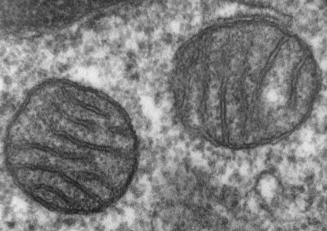
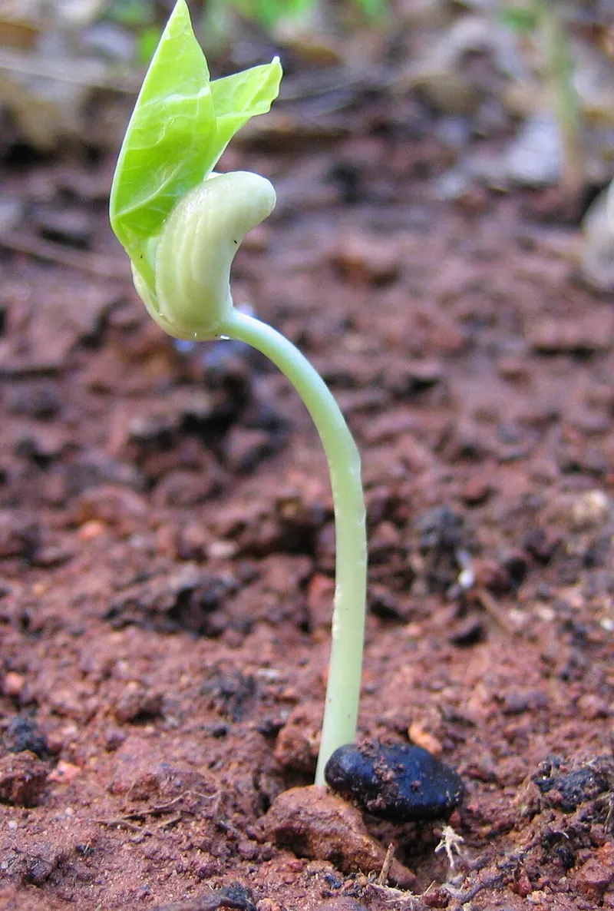

Cambridge Lower Secondary · Science 0893 · Stage 8 · Biology
Aerobic Respiration
How every plant and animal cell releases energy from glucose in its mitochondria, the word equation for aerobic respiration, why it is a controlled release, and the classic experiments — with Checkpoint-style practice.
British & IGCSE › Checkpoint 8 › Checkpoint 8 Science — Complete Course
- Know that aerobic respiration happens in the mitochondria of plant and animal cells and gives a controlled release of energy (8Bp.04)
- Know and use the word equation for aerobic respiration: glucose + oxygen → carbon dioxide + water (8Bp.05)
Every living cell needs a constant supply of energy — to move, to grow, to keep warm and simply to stay alive. Cells get this energy from food (mainly glucose) by a chemical reaction called respiration. When the reaction uses oxygen it is called aerobic respiration. It happens in all living cells, in plants and in animals, all the time — day and night, awake or asleep.
| Word / phrase | Meaning / use |
|---|---|
| respiration | التنفس الخلوي — a chemical reaction in cells that releases energy from glucose |
| aerobic | هوائي — using oxygen |
| glucose | الجلوكوز — a sugar; the main fuel for respiration |
| mitochondria (one: mitochondrion) | الميتوكوندريا — the parts of the cell where aerobic respiration happens |
| reactant | مادة متفاعلة — a substance used up in a reaction |
| product | ناتج — a substance made in a reaction |
| word equation | معادلة لفظية — a reaction written with the names of the substances |
| controlled release | انطلاق مُتحكَّم فيه — energy released a little at a time |
| limewater | ماء الجير — a test for carbon dioxide (turns milky) |
The word equation
glucose + oxygen → carbon dioxide + water
| Substance | Where it comes from / where it goes (humans) | In plants | |
|---|---|---|---|
| Reactant | glucose | From digested food; carried to cells in the blood plasma | Made by photosynthesis in the leaves |
| Reactant | oxygen | From the air in the lungs; carried by red blood cells | From the air (through the leaves) or from photosynthesis |
| Product | carbon dioxide | Carried in the plasma to the lungs and breathed out | Used in photosynthesis or released to the air |
| Product | water | Used in the body or removed (urine, sweat, breath) | Used in the plant or lost from the leaves |
- Read the arrow as "react to make". Reactants on the left, products on the right.
- Energy is released, but energy is not a substance, so it is not written as a product. Some books write "(energy released)" next to the arrow — that is fine, but never write "energy" in place of water or carbon dioxide.
- The same equation is true for every cell that respires aerobically: muscle cells, root cells, leaf cells, even the cells of your lungs.
Using symbols (extension, TWSm.03): scientists write the same reaction with chemical formulae: C6H12O6 + 6O2 → 6CO2 + 6H2O. It shows that one glucose molecule reacts with six oxygen molecules to make six carbon dioxide and six water molecules. You must know the word equation; the symbol equation is useful but not required.
Where it happens: the mitochondria
Aerobic respiration happens inside tiny structures in the cytoplasm called mitochondria (one is a mitochondrion). Both plant and animal cells have mitochondria. Plant cells also have chloroplasts for photosynthesis, but they still need mitochondria to respire.
Cells that use a lot of energy have many mitochondria. For example, muscle cells contain far more mitochondria than fat-storage cells, because muscle cells need lots of energy to contract. Root hair cells in plants also have many mitochondria, because they use energy to take in minerals from the soil.

A controlled release of energy
If you burn sugar in a flame, it reacts with oxygen and makes carbon dioxide and water — the same products as respiration. But burning releases all the energy at once as heat and light, at a very high temperature. That would destroy a cell.
| Burning (combustion) | Aerobic respiration | |
|---|---|---|
| Reactants | fuel (e.g. glucose) + oxygen | glucose + oxygen |
| Products | carbon dioxide + water | carbon dioxide + water |
| How the energy is released | All at once, very quickly | Gradually, in many small, controlled steps |
| Temperature | Very high (a flame) | Body temperature — cells are not damaged |
| Where | In a flame | Inside the mitochondria of living cells |
Why a controlled release matters: the cell can capture the energy in small, useful amounts and use it for its jobs, instead of losing it all as heat. Some energy is still released as heat — that is what keeps mammals and birds warm.
What the energy is used for
- Movement — muscle cells contract.
- Growth and repair — building new cells and making large molecules such as proteins.
- Keeping warm — mammals and birds keep a steady body temperature (about 37 °C in humans).
- Sending messages along nerve cells.
- In plants — growth, and taking in minerals from the soil through root hair cells.
التنفس الخلوي تفاعل كيميائي بيحصل في الميتوكوندريا جوه كل خلية حية — في النبات والحيوان، بالليل والنهار. المعادلة: جلوكوز + أكسجين ← ثاني أكسيد الكربون + ماء. الطاقة بتطلع بالتدريج على خطوات صغيرة (مش مرة واحدة زي الحريق)، عشان الخلية تقدر تستفيد بيها. الطاقة مش مادة، فما بنكتبهاش كناتج في المعادلة.
Respiration, breathing and photosynthesis
| Aerobic respiration | Breathing | Photosynthesis | |
|---|---|---|---|
| What it is | Chemical reaction that releases energy from glucose | Moving air in and out of the lungs | Chemical reaction that makes glucose using light energy |
| Which organisms | All living organisms (plants and animals) | Animals with lungs | Plants (and algae) |
| Where | Mitochondria of every cell | Lungs | Chloroplasts in leaf cells |
| When | All the time, day and night | All the time | Only in light |
| Equation | glucose + oxygen → carbon dioxide + water | (no reaction) | carbon dioxide + water → glucose + oxygen |
During exercise your muscle cells respire faster to release more energy. They need more oxygen and glucose, and they make more carbon dioxide. So your breathing rate and depth increase (more oxygen in, more carbon dioxide out) and your heart rate increases (blood delivers oxygen and glucose faster and removes carbon dioxide).
Evidence for respiration: two experiments
1. Respiration releases energy as heat. Peas that are germinating (starting to grow) respire quickly. Two vacuum flasks are set up:

- Independent variable: living or dead peas. Dependent variable: temperature. Control variables: same type and number of peas, same size flask, same starting temperature, same room.
- Why vacuum flasks? They are insulated, so heat released by respiration is not lost and the rise in temperature can be measured.
- Why disinfect the peas? To kill microorganisms (bacteria and fungi) on the peas. They also respire and would release heat, so the results would not show the peas' respiration alone.
- Why Flask B? It is the control: it shows that the temperature rise in A is caused by living peas respiring, not by something else.
2. Respiration produces carbon dioxide. Limewater turns milky (cloudy) when carbon dioxide is bubbled through it. Air is drawn through a tube containing small living organisms (for example germinating seeds or maggots resting on gauze), then through limewater. The limewater turns milky. In a control tube with glass beads instead of living things, the limewater stays clear. Living animals must be handled carefully and returned to their habitat afterwards.
Worked examples
Worked example 1 (word equation) Complete the word equation for aerobic respiration. [2] glucose + ______ → ______ + water
- glucose + oxygen → carbon dioxide + water [1 each]
- Common mistake: writing "energy" as a product, or writing the photosynthesis equation the wrong way round.
Worked example 2 (where respiration happens) Amina says, "Plants make their food by photosynthesis, so they do not need to respire." (a) Explain why Amina is wrong. [2] (b) Name the part of a plant cell where aerobic respiration takes place. [1]
- (a) All living cells need energy (for growth, taking in minerals…) [1]; plants respire all the time (day and night) to release energy from the glucose they made [1].
- (b) mitochondria (accept mitochondrion)
- Common mistake: "Plants respire only at night." They respire all the time; at night it is just easier to notice because photosynthesis stops.
Worked example 3 (the flask experiment) Use the flask diagram and the graph above. (a) Calculate the rise in temperature in Flask A over the 5 days. [1] (b) Explain why the temperature rose in Flask A. [2] (c) Explain why Flask B was set up. [1]
- (a) 25.5 − 20.0 = 5.5 °C
- (b) The living peas respire [1]; respiration releases energy, some of it as heat, and the flask stops the heat escaping [1].
- (c) It is a control, to show the temperature rise is caused by the living (respiring) peas.
- Exam technique: always read graph values at the exact grid line; here day 5 is halfway between 25 and 26 °C.
Worked example 4 (controlled release) Respiration and burning both turn glucose and oxygen into carbon dioxide and water. Describe one way respiration is different from burning. [1]
- Respiration releases energy gradually / in small steps (a controlled release), but burning releases it all at once as heat and light. (Accept: respiration happens at body temperature / inside cells.)
- Common mistake: "Respiration makes energy." Energy cannot be made — it is released from the glucose.
Worked example 5 (exercise) Explain why a runner's breathing rate increases during a race. [3]
- Her muscle cells need more energy, so they carry out more respiration. [1]
- More respiration needs more oxygen (and glucose). [1]
- Breathing faster takes in more oxygen and removes the extra carbon dioxide made. [1]
Worked example 6 (using symbols) The symbol equation for respiration is C6H12O6 + 6O2 → 6CO2 + 6H2O. How many molecules of oxygen are needed to react with 3 molecules of glucose? [1]
- 1 glucose needs 6 oxygen, so 3 glucose need 3 × 6 = 18 molecules of oxygen.
- Writing "respiration is breathing". Respiration is a chemical reaction in cells; breathing moves air.
- Saying "respiration makes energy" — energy is released, not made.
- Writing energy as a product in the word equation.
- Saying plants only photosynthesise and do not respire, or that they respire only at night.
- Saying respiration happens in the nucleus or chloroplasts. Aerobic respiration happens in the mitochondria.
- Forgetting that respiration is a controlled release; burning is not controlled.
- In experiments, forgetting to explain the control (dead peas / glass beads).
- Complete the word equation — often with one or two gaps. Learn the four words and their order.
- Label a cell and identify the mitochondria; tick boxes for which cells (plant, animal or both) contain mitochondria.
- Experiments: germinating seeds and temperature, limewater and carbon dioxide. Expect questions on the control, variables, why disinfect, and reading the graph.
- Explain links between exercise, respiration, breathing rate and heart rate (3 marks: energy → oxygen → breathing/heart).
- Compare respiration with burning or with photosynthesis in a table.
- Use exact words: releases energy, mitochondria, controlled, glucose.
Practice
- Aerobic respiration: glucose + oxygen → carbon dioxide + water (energy is released, but it is not a product).
- It happens in the mitochondria of plant and animal cells — in every living cell, all the time.
- It is a controlled release of energy: small steps at body temperature, unlike burning (all at once, as heat and light).
- The energy is used for movement, growth and repair, keeping warm and (in plants) taking in minerals.
- Evidence: germinating peas warm a vacuum flask; respiring organisms turn limewater milky. Always explain the control.
All pages in this course
Start here
- Stage 8 Science: The Tests and How to Prepare
- Thinking and Working Scientifically: Models, Investigations and Analysing Results
Biology
- Joints and Antagonistic Muscles
- Blood and Its Components
- Breathing, Gas Exchange and Diffusion in the Lungs
- A Balanced Diet, Energy Stores and Lifestyle
- Aerobic Respiration
- Ecosystems, Bioaccumulation and Invasive Species
Chemistry
- The Structure of the Atom
- Purity, Concentration and Chromatography
- Word Equations, Exothermic and Endothermic Reactions
- The Reactivity of Metals
- Impure Products and Solubility of Salts
Physics
- Speed and Distance–Time Graphs
- Balanced and Unbalanced Forces, and Moments
- Pressure, Particles and Diffusion
- Reflection and Refraction
- Dispersion and Colour
- Magnetic Fields and Electromagnets
Earth and space
- The Earth's Magnetic Field and Earth's Resources
- Climate, Weather and Climate Change
- Galaxies and Asteroids
Practice tests